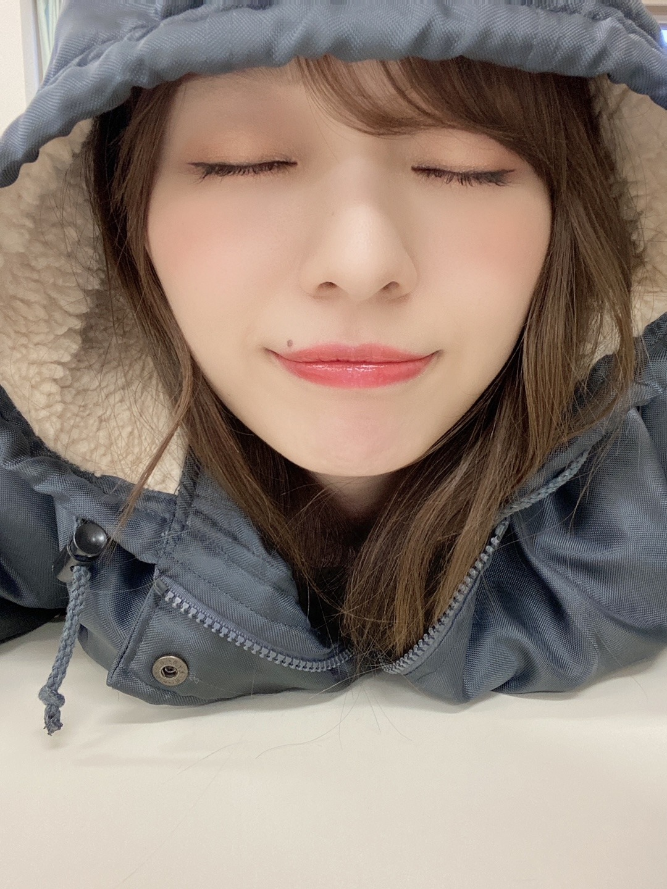
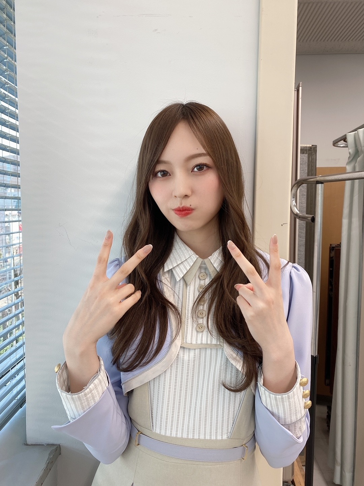
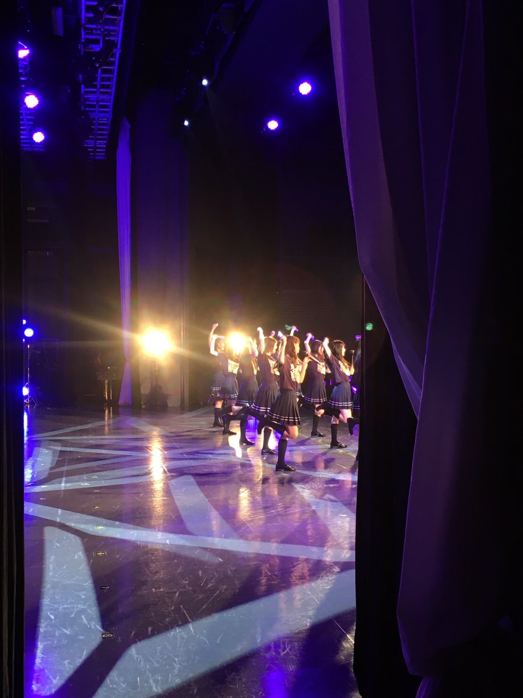
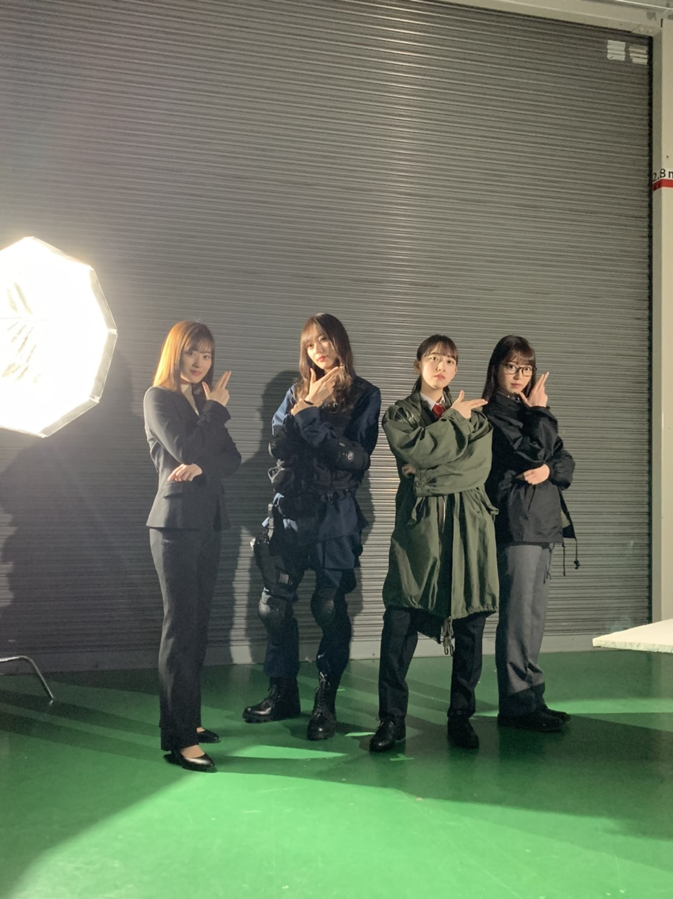
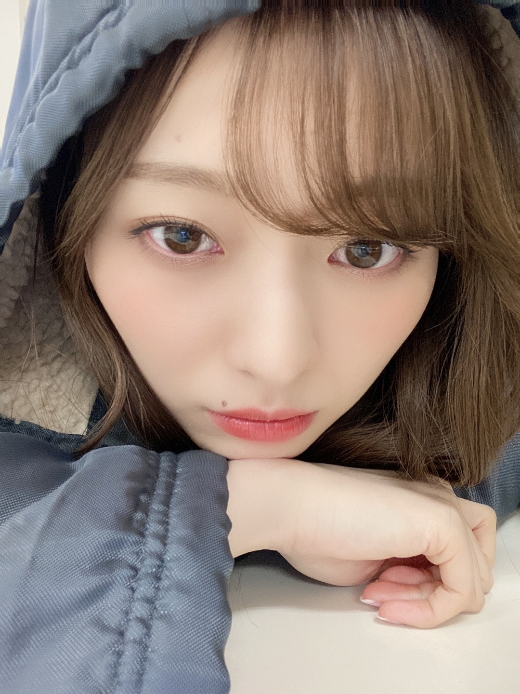

理想から逸れても、それでも

待ち時間がたっぷりある日で
眠さと戦っていました
勝ちました︎︎︎︎✌︎
気づけばまたこんなに日を重ねていた...
４月になりましたね。
いかがお過ごしですか？
新生活が始まった方も多いのではないでしょうか。
新しい環境への一歩は
いつだって不安がつきもので
強く固めた意志や目標が 揺らいでしまいそうになる日もあるかもしれませんが
たまには 肩の力を抜いて
とにかく頼りながら 力を借りながら
笑顔になれる瞬間を増やしていってほしいなと思います。
私は
後回しにせず、行動に移す勇気と...
挑戦と継続を忘れずにいたいです。
日々 過ごしていると
何かと焦りに追われ 生き急いでしまいがちなので...
バタバタしている時こそ
少し余裕を持った時間の使い方をしていきたい！

裏ピースが 激ださ☆
昨日アイスを買ったのを忘れて
買い物袋を後回しにしたままお風呂に直行してしまいました。
お風呂が長い私なので
完全に溶けてしまったアイス...
しゃばしゃばだったよびっくり。
また冷凍庫に入れたけど
元通りになりますように。
もう最近はひたすら甘いものを求めてる！
最近観た映画は
「望み」
「花束みたいな恋をした」
「湯を沸かすほどの熱い愛」
「コーヒーが冷めないうちに」
です。
コーヒーが冷めないうちに は
小説から好きで読んでいて、
映画も何度観たか分からないくらい好きです。
それから、
「20代で得た知見」という本を
いくつかの本と並行しながら、
半年ほど前から
ちびちび 読み進めています
いや、冷静に時間かけすぎですよね
読み進めたくなる気持ちと
休憩を挟みながら 一つ一つ
受け止める時間が欲しくなって
じっくりゆっくりになってしまいます。
読みたい本は増えていくのですが
何せ 読み進めるのが遅いもので...
オススメあったら教えてくださいませ。
最近 最近 と言ってますが
実はもうそんな最近の出来事ではなかったりもして。
下書きをしては、
何度も書き直しをして の繰り返し
期間が空いてしまってすみません！
５月９日に
何年ぶりでしょうか...
あれから４年か。４年。
４年も日を重ねた今でも、
１２人で挑める奇跡。奇跡です！
この喜びは...なんとも言えません。
目がじわじわと湿る想い。嬉しい！
そんな喜びを噛み締めながら
感謝しながら
私たち自身が何より楽しんで挑みます。
準備も進めていますが...
どこか変わらない部分もありつつ、
当時とは明らかに変わった皆の姿勢に
自分自身が刺激をもらいつつ
どこかほっこりした気持ちになります。

４年、あっという間だったね
いや、長かったのかなあ
そして翌日５月９日は、我々３期生。
先輩達が繋いでくださったバトンを受け取り
９th Birthday LIVEを
最高な形で締めくくります。
乃木坂の愛と らしさが詰まった
これが私が好きな乃木坂だ...！！と
２日間通して改めて感じた日。
私たちもそんな時間にしたい！
配信ではもちろん、
有観客で行うことも発表になりした。
まだまだ予断を許さない状況で
制限がある中ではありますが
ぜひ、安全第一で 足を運んでくださったら嬉しいです。
１０周年まで、きっとあっという間です！
その日に向けて、走って行きます！
皆様、楽しんでまいりましょう！
告知◎
▽with ５月号 発売中です！
▽４／１３ TBS 22:00~ 「有吉ジャポンII ジロジロ有吉SP」
▽４／１６ 日テレ25:59~「夜バケット」
詳しくはこちらからぜひ↓
https://www.ntv.co.jp/nogisuki/live/
未央奈さん、
改めてご卒業おめでとうございます！
こう在りたいなあ と思わせてくれる
かっこいい女性でした。
芯があって 真っ直ぐで ブレなくて
いつだって迷いがなくて。
後輩一人一人に たくさんの愛を下さりました。
初めて外のバラエティに出させていただいた時、
隣にいてくださったのは未央奈さんでした。
心強さと、優しさと、安心感と...
いつだって一緒にお仕事する時は
そのかっこいい背中に刺激を受ける日々でした。
歌番組で一緒に歌えたことも
未央奈さんからいただいた自己紹介も
堀様軍団としてパフォーマンスした時間も
全部全部宝物！

楽しかった撮影！
たまにオフショット動画を見返してしまうくらい好きな時間でした。
またどこかで ご一緒できる日が来ますように...！
寒いのか 暑いのか
今が一番気温調節難しい...
まだ夜は温かいものが食べたくなります。
ここ数年はずっとだし醤油にハマっていて
お料理に使うのも
お刺身に使うのもマストなので
家に４本くらいストックしてあります☀︎
そういえば
まだ残りに余裕があっても
無くては不安になるし
今日食べる物でなくても
とりあえず買っていつでも食べれるようにと
ストックすることが多いので
心配性からくるストック女なのかもしれません︎︎︎︎✌︎
日常生活での癖とか、あります？
ふとした時に 気づく自分の性格と癖が
なんだか面白いです。
つらつらと長い文をすみません

では。
また書きます
今日はお仕事、学校、
もう終わりましたか？
あー今日ダメかも
と 決めつけた日に限って
意外と上手くいったり いい事があったり
そんな毎日です
そんな日は
期待を裏切られる面白さを感じます
終わりよければすべてよしとは この事ですかね
Original：https://www.nogizaka46.com/s/n46/diary/detail/61190?ima=4935&cd=MEMBER